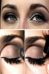

ေတာက္ ပ ေသာ မ်က္ လံုးတစ္ စံုရရွိရန္

၁။ မိတ္ ကပ္ အမ်ားၾကီးလိမ္း ျခင္း က မ်က္ လံုးကို အ ေရာင္ မိွန္ ေစပါတယ္။ မိတ္ ကပ္ က မ်က္ လံုးရဲ႕ႏူးညံ့တဲ့ အ ေရျပားကိုလဲ ထိခိုက္ ေစလို႕ မ်က္ လံုးအလွ ေပၚလြင္ ခ်င္ ရင္ မိတ္ ကပ္ ပါးပါး ေလးပဲ လိမ္း သင့္ ပါတယ္။
၂။ ေတာက္ ပတဲ့မ်က္ လံုးကို ပိုင္ ဆိုင္ ဖို႔ ေရမ်ားမ်ား ေသာက္ ပါ။
၃။ ဗီတာမင္ ေအပါဝင္ တဲ့ မုန္ လာဥနီ၊ ကန္ စြန္း ဥ၊ ဟင္း ႏုႏြယ္၊ ဗီတာမင္ စီပါဝင္ တဲ့ မာလကာသီး၊ ငရုတ္ ပြသီး၊ သ ေဘၤာသီးႏွင့္ အခ်ဥ္ ဓာတ္ ပါဝင္ ေသာ အသီးတို႔ကို ပံုမွန္ စား ေပးပါ။
၄။ ဖ်ားနာျခင္း ေပ်ာက္ ကင္း ေသာ္လည္း ေဆးကို ေဆးပတ္ လည္ ေအာင္ ေသာက္ ေပးပါ။ ေမာပန္း ရင္ ေရဆူ ေဆးျပား ေဖ်ာ္ ရည္၊ ဓာတ္ ဆားရည္ တို႔ ေသာက္ပါ။
၅။ ငါးၾကီးဆီ တစ္ ေန႔ကို အမ်ားဆံုး ေလးလံုး ေသာက္ ပါ။ ေန႔လည္ စာစားျပီး ၂လံုး၊ ည ေနစာစားျပီး ၂လံုး ေသာက္ သံုးႏိုင္ ပါတယ္။
၆။ မအီမသာျဖစ္ ရင္ ေတာ့ သၾကားမုန္ လာ ေဖ်ာ္ ရည္ကို မနက္ တိုင္း ေသာက္ ေပးပါ။
၇။ သင့္ လက္ ႏွစ္ ဖက္ ကို ပူလာသည္ အထိပြတ္ ျပီး မ်က္ လံုးမ်ား ေပၚတြင္ တင္ ကာ သင့္ မ်က္ လံုးကို အနား ေပးပါ။
၈။ မိတ္ ကပ္ မ်ားဖ်က္ ျပီး ေနာက္ သင့္ မ်က္ လံုးကိုလဲ ေရ ေဆးပါ။ ႏူးညံ့ ေသာတဘက္ ႏွင့္ မ်က္ လံုးကို ညင္ သာစြာ ေျခာက္ ေအာင္ ျပဳလုပ္ ပါ။
၉။ လက္ ဘက္ ရည္ ပူ ခပ္ ျပင္း ျပင္း ထဲကို လက္ ဘက္ ေျခာက္ အနည္း ငယ္ ထည့္ ျပီး ၅မိနစ္ ခန္႔ ထားပါ။ ထို႔ ေနာက္ အ ေအးခံျပီး ဝါဂြမ္း စႏွင့္ အရည္ ဆြတ္၊ ျပီး ေနာက္ မ်က္ ခြံမ်ား ေပၚတင္ ပါ။ ေအး ေသာ လက္ ဘက္ ရည္ မရလွ်င္ ေႏြး ေသာ လက္ ဘက္ ရည္ ကို သံုးႏိုင္ ပါတယ္။ ၁၅မိနစ္ - မိနစ္ ၂၀ခန္႔ ဆို ဖယ္ လို႔ရပါျပီ။
၁၀။ သင့္ မ်က္ လံုးကို ပိတ္ ႏိုင္ သမွ် ခပ္ တင္း တင္း ပိတ္ ပါ။ ခ်က္ ခ်င္း ပင္ အစြမ္း ကုန္ ျပဴးႏိုင္ သမွ် ျပဴးပါ။ မ်က္ လံုးတစ္ ခုလံုး စိုစြတ္ သည္အထိ ျပဳလုပ္ ပါ။
၁၁။ ပန္း သီးကို ျခစ္ တံႏွင့္ ျခစ္ ျပီး ပိတ္ စထဲထည့္ ျပီး အရည္ ညစ္ ပါ။ ဝါဂြမ္း စႏွင့္ အရည္ ဆြတ္၊ ျပီး ေနာက္ မ်က္ ခြံမ်ား ေပၚတင္ ပါ။ ၁၅မိနစ္ - မိနစ္ ၂၀ခန္႔ ဆို ဖယ္ လို႔ရပါျပီ။ လိုအပ္ သလို ထပ္ ခါထပ္ ခါ သံုးႏိုင္ ပါတယ္။
၁၂။ သခြားသီးကိုလဲ အထက္ ပါ နည္း အတိုင္း ျပဳလုပ္ သံုးစြဲႏိုင္ ပါတယ္။
၁၃. အျပင္ သြားတုိင္း ေနကာမ်က္ မွန္ တပ္ ဖို႔ မ ေမ့ပါႏွင့္။
၁၄။ အိပ္ ယာမဝင္ ခင္ တိုင္း မ်က္ စိကို ေဆး ေၾကာပါ။
၁၅။ တရားထိုင္ ျခင္း၊ ေယာဂ ေလ့က်င့္ ျခင္း၊ အသက္ ျပင္း ျပင္း ရႈျခင္း တို႔က သင့္ စိတ္ သာမက သင့္ မ်က္ စိအတြက္ လည္း အေထာက္ အကူျပဳပါတယ္။